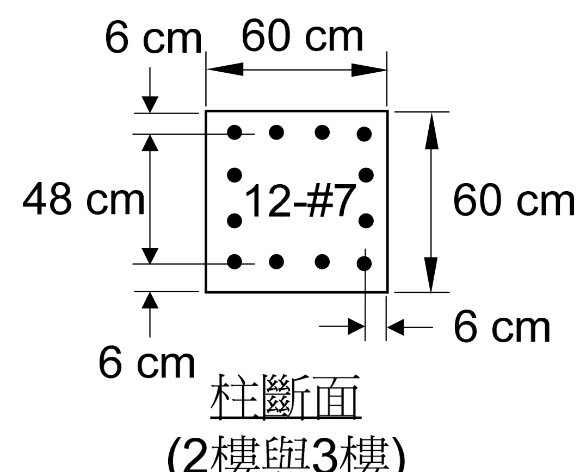
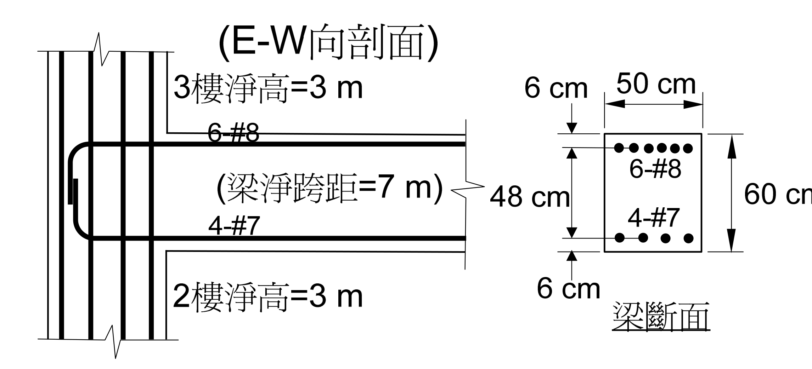
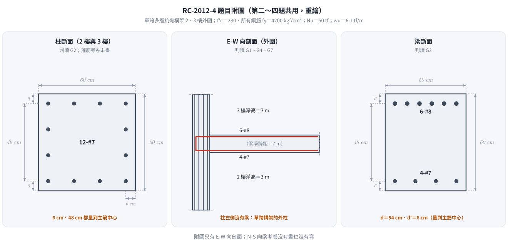
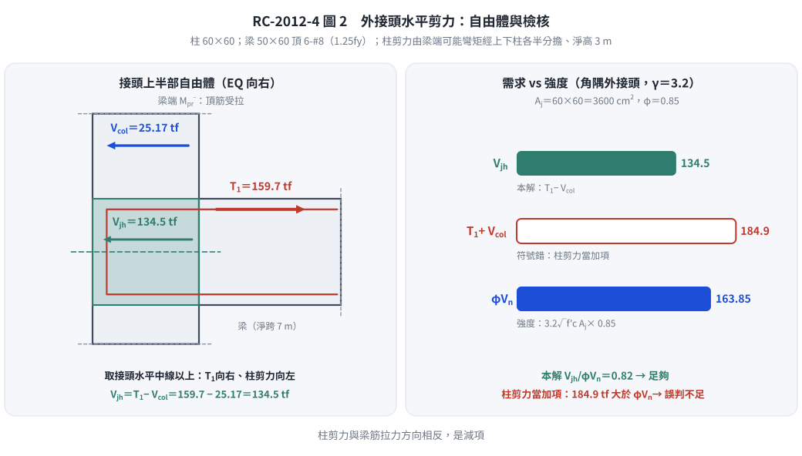

📄 題目正本：考卷原文・附圖・判讀清單（已確認）
RC-2012-4 題目正本
本檔只記錄考卷上寫了什麼、圖上畫了什麼，不含任何解法。解析見同資料夾
RC-2012-4.md。
判讀清單已經使用者確認（凍結）；本檔原則上不再修改（改動須回考卷原圖並記 log）。
| 項目 | 內容 |
|---|---|
| 考卷 | raw/exams/RC-2012_鋼筋混凝土設計與預力.pdf 第 1 頁（正面）第四題；背景敘述、公式與附圖在第 2 頁（背面） |
| 考年 | 民國 101 年（2012） |
| 配分 | 20 分 |
| 附圖 | RC-2012-4-fig-1.png（柱斷面）、RC-2012-4-fig-2.png（E-W 向剖面與梁斷面）；2026-11-14 由考卷 500 dpi 擷取（與第二題共用附圖） |
| 判讀狀態 | 已確認（2026-11-14 使用者確認；轉錄 2026-11-14；PyMuPDF 110 dpi 全頁目視＋抽出文字核對，附圖 400–500 dpi；盲讀後才比對既有解析） |
1. 考卷原文（逐字）
四、承第三題，接頭區箍筋配筋同柱箍筋之配置，附圖中之柱是屬於結構角隅邊柱，試檢核此梁柱外接頭剪力是否足夠？若不足夠，應說明如何改善。（20 分）
2. 考卷給的公式、附表與參數
第一頁第一題後印「第二題至第四題請依試題背面敘述及附圖作答：」，背面敘述照錄：
所設計之某一單跨多層 RC 建築抗彎構架（moment-resisting frame），取其中 2 樓與 3 樓結構外圍之梁柱配置如下圖所示。所提供之設計參數與公式如下：
所有樓層柱淨高為 3 m，單跨之梁淨跨距為 7 m。
梁與柱混凝土 $f'_c$ = 280 kgf/cm²，所有號數鋼筋 $f_y$ = 4200 kgf/cm²。
柱設計極限軸力為 $N_u$ = 50 tf，梁設計垂直極限載重為 $w_u$ = 6.1 tf/m，設計時不考慮樓版貢獻。
梁箍筋使用 #3（面積為 0.71 cm²），柱箍筋使用 #4（面積為 1.27 cm²），梁與柱主筋使用 #7（面積為 3.87 cm²）與 #8（面積為 5.07 cm²）。部分相關規範公式與規定節錄如下：
柱閉合箍筋面積公式：$A_{sh1} = 0.3 \times s \times b_c \dfrac{f'_c}{f_{yt}}\left[\dfrac{A_g}{A_{ch}} - 1\right]$ 或 $A_{sh2} = 0.09 \times s \times b_c \times \dfrac{f'_c}{f_{yt}}$
柱橫向箍筋間距公式：$s_0 = 10 + \left(\dfrac{35 - h_x}{3}\right)$
混凝土抗剪強度（有軸壓力）：$V_c = 0.53\left(1 + \dfrac{N_u}{140A_g}\right)\sqrt{f'_c}\,b_w d$
梁柱接頭剪力強度規定：$5.3\sqrt{f'_c}A_j$（接頭四面接受圍束）或 $3.9\sqrt{f'_c}A_j$（三面或一雙對面受圍束）或 $3.2\sqrt{f'_c}A_j$（其他），$A_j$ 為接頭有效斷面積附圖：2 樓與 3 樓外圍結構 E-W（東西）向剖面之梁、柱與接頭配置情形
- 卷首注意事項：㈠可以使用電子計算器。㈡不必抄題，作答時請將試題題號及答案依照順序寫在試卷上，於本試題上作答者，不予計分。㈢答題所需公式或參數若未提供，請自行作合理假設。
3. 附圖

圖面文字照錄：6 cm、60 cm、48 cm、12-#7、60 cm、6 cm、6 cm、柱斷面 (2樓與3樓)。

圖面文字照錄：(E-W向剖面)、3樓淨高=3 m、6-#8、(梁淨跨距=7 m)、4-#7、2樓淨高=3 m、6 cm、50 cm、6-#8、48 cm、4-#7、60 cm、6 cm、梁斷面。
4. 判讀清單
「把握」標不確定者請優先確認；解讀類項目（題目用字的意思）另標「解讀」。第二～四題共用的判讀以 G 編號列出（三題相同）。
| # | 項目 | 判讀 | 圖上／題文依據 | 把握 |
|---|---|---|---|---|
| 1 | 柱位置 | 結構角隅邊柱（corner column）；E-W 向只有一側有梁（圖示），N-S 向梁的有無、尺寸考卷沒有畫也沒有寫 | 題文；附圖只有 E-W 向剖面 | 確定（解讀） |
| 2 | 接頭箍筋 | 同第三題柱箍筋配置（數值由第三題設計結果而來，考卷未給） | 題文 | 確定 |
| 3 | 所求 | 檢核外接頭剪力是否足夠；不足則說明改善方法 | 題文「梁柱外接頭」 | 確定 |
| 4 | 沒有給 | 接頭所在樓層是否為頂層（題述為 2、3 樓之間）、接頭剪力 $\phi$、N-S 向梁 | 全題 | 確定 |
| G1 | 構架 | 單跨多層抗彎構架；圖示柱為外柱（E-W 向只有一側有梁） | 背面敘述「單跨」；立面柱左側無梁 | 確定 |
| G2 | 柱斷面 | $60 \times 60$ cm，12-#7（每邊 4 根）；鋼筋中心距柱面 6 cm，上下排中心距 48 cm | 柱斷面圖：6 cm 尺寸線端點落在柱面與鋼筋中心線；48 cm 量兩排鋼筋中心 | 確定 |
| G3 | 梁斷面 | $50 \times 60$ cm；頂 6-#8 一排、底 4-#7 一排；鋼筋中心距梁頂、梁底各 6 cm → $d = 54$ cm，$d' = 6$ cm | 梁斷面圖：6 cm 尺寸線端點落在梁面與鋼筋中心線；48 cm 量兩排鋼筋中心 | 確定 |
| G4 | 淨高與淨跨 | 2 樓、3 樓柱淨高皆 3 m；梁淨跨 7 m | 背面敘述；立面標註 | 確定 |
| G5 | 載重 | 柱 $N_u = 50$ tf；梁 $w_u = 6.1$ tf/m（設計值）；不考慮樓版 | 背面敘述 | 確定 |
| G6 | 材料 | $f'_c = 280$、所有鋼筋 $f_y = 4200$ kgf/cm²（含箍筋） | 背面敘述「所有號數鋼筋」 | 確定 |
| G7 | 梁筋錨定 | 梁上下筋伸入柱內以彎折相連（立面畫成 U 形） | 立面圖 | 確定（解讀） |
| G8 | 梁柱接頭強度式 | 考卷印 $5.3$／$3.9$／$3.2\sqrt{f'_c}A_j$，標題為「梁柱接頭剪力強度規定」，未寫「設計」或「標稱」，未給 $\phi$ | 背面公式節錄 | 確定 |
轉錄：2026-11-14（RC-U3-3 題目正本推廣・批 1）
確認：2026-11-14 使用者確認（RC-U3-3 題目正本推廣・批 1，關卡一）
考題編號：RC-2012-4
主分類： RC-U3-3 韌性要求與耐震設計
副分類： 無
設計法： USD 強度設計法
標籤： 梁柱外接頭 接頭剪力 角隅邊柱 Vjh Aj接頭有效面積 γ係數3.2 外接頭 強柱弱梁 特殊矩形框架接頭 接頭彎矩分擔 Vcol反推 1.25fy φ0.85接頭 屋頂層接頭折減
1. 題目（考卷原文見題目正本）
考卷原文、公式／附表、附圖與判讀清單（已確認）見
RC-2012-4-problem.md。本節只列解題時最容易讀錯的地方與本解使用的記號；題意以題目正本為準。

重繪自考卷附圖，依題目正本判讀清單 G1–G7。本圖攔下的讀錯：附圖只有 E-W 向剖面，圖示柱為外柱；角隅柱的 N-S 向梁考卷沒有畫也沒有寫。
常見誤讀
| 項目 | 正確判讀 | 常見誤讀 |
|---|---|---|
| 接頭箍筋 | 「同柱箍筋之配置」＝第三題設計結果（4-leg #4 @ 13 cm），考卷沒有給數值 | 當成題目給定 |
| 接頭強度式 | 考卷標題「梁柱接頭剪力強度規定」，未寫設計或標稱、未給 $\phi$ | 說成原卷標為「設計強度」（本庫舊解） |
| 角隅邊柱 | E-W 向只有一側有梁；N-S 向梁考卷未畫未寫 | 自行假設 N-S 向梁寬深 |
| $V_{col}$ | $\Sigma M_{pr}/l_n$（接頭梁彎矩由上下柱分擔） | $2M_{pr}/l_n$ |
本解記號與延用數值：
| 來源 | 數值 |
|---|---|
| $M_{pr}^-$（頂筋 6-#8，EQ→右） | $75.52\ \text{tf·m}$（RC-2012-2；$7{,}552{,}400\ \text{kgf·cm}$） |
| $M_{pr}^+$（底筋 4-#7，EQ→左） | $41.11\ \text{tf·m}$（RC-2012-2） |
| 柱設計剪力 $V_{col}$ | $\mathbf{25.17\ tf}$（RC-2012-3，2026-08-22 已更正；見下方警示） |
| 梁頂筋 $A_{s,\text{top}}$，$f_{ps} = 1.25f_y$ | $30.42\ \text{cm}^2$，$5{,}250\ \text{kgf/cm}^2$ |
| 柱斷面 $b_c \times h_c$ | $60 \times 60\ \text{cm}$ |
| 梁斷面 $b_w \times h$ | $50 \times 60\ \text{cm}$（$d = 54$ cm，保護層 6 cm 至筋心） |
| 柱淨高 $l_n$ | $300\ \text{cm}$ |
| $f'_c$ | $280\ \text{kgf/cm}^2$ |
⚠ 2026-09-07 主線數值變更（本頁最重要的一筆）：
舊版本頁沿用RC-2012-3勘誤前的 $V_{col} = 50.33$ tf，得 $V_{jh} = 109.4$ tf。
RC-2012-3已於 2026-08-22 更正為 $V_{col} = \mathbf{25.17}$ tf ——
接頭處梁傳來的彎矩是由接頭上、下兩根柱依勁度分擔的，
$V_{col} = \dfrac{\Sigma M_{pr,\text{beam at joint}}}{l_n} = \dfrac{75.52}{3.0}$，不是 $\dfrac{2M_{pr}}{l_n}$。
$V_{col}$ 在本題是 $V_{jh}$ 的減項，減項被高估一倍 ⇒ $V_{jh}$ 被低估。
更正後 $V_{jh} = \mathbf{134.5}$ tf（+23%），結論（足夠）不變，但餘裕由 43% 掉到 18%，
且在 ACI 318-19 的屋頂層接頭讀法下會不通過（見 §6）。
題目所給接頭剪力強度規定（原卷印出）：
| 圍束條件 | 強度 |
|---|---|
| 接頭四面受圍束 | $5.3\sqrt{f'_c}\,A_j$ |
| 三面或一雙對面受圍束 | $3.9\sqrt{f'_c}\,A_j$ |
| 其他 | $3.2\sqrt{f'_c}\,A_j$ |
原卷標題只寫「梁柱接頭剪力強度規定」，未說設計或標稱，也沒有給 $\phi$；土木 401／ACI 318 定義 $V_n = \gamma\sqrt{f'_c}A_j$ 為標稱強度，
接頭剪力另有專用的 $\phi = 0.85$（§21.2.1(e)）。本解主線乘上 $\phi$（與同庫RC-2005-3一致），
並在 §5① 並列「不乘 $\phi$」的對照值——兩種讀法結論都是足夠。
2. 考題核心精神與出題者意圖 (Core Concepts & Examiner's Intent)
核心精神：
強柱弱梁機制中，梁端塑鉸形成時會對梁柱接頭施加極大水平剪力。外接頭（角隅邊柱）因分析平面內只有單側梁框入、缺乏對向梁的圍束，接頭剪力強度係數最低（$\gamma = 3.2$），故是否充裕須嚴格驗算。
出題者意圖：
- 測試「外接頭水平剪力 $V_{jh}$」的正確推導（梁筋力 $T_1$ 減去柱剪力 $V_{col}$）
- 測試 $V_{col}$ 的來源——它必須是已經分擔過的柱端剪力，不是「兩倍梁彎矩除以柱淨高」
- 測試接頭有效面積 $A_j = b_j \times h_c$ 的計算（$b_j$ 依規範原式取小）
- 測試圍束條件分類（角隅邊柱 → 外接頭 → 「其他」→ $\gamma = 3.2$）
- 測試改善措施的知識（若不足時）
3. 解題戰略地圖與陷阱分析 (Strategic Roadmap & Trap Analysis)
作戰計畫：
Step 1：梁頂筋拉力 T1（用 fps = 1.25fy）
Step 2：接頭水平剪力需求 Vjh = T1 − Vcol（Vcol 取 RC-2012-3 的 25.17 tf）
Step 3：判斷圍束條件 → 選用正確係數（γ = 3.2）
Step 4：接頭有效面積 Aj = bj × hc
Step 5：標稱強度 Vn = γ√f'c·Aj → 設計強度 φVn（φ = 0.85）
Step 6：比較 Vjh vs φVn → 結論；不足時說明改善方式
關鍵陷阱：
| # | 陷阱 | 應對策略 |
|---|---|---|
| 1 | $V_{col}$ 沿用「$2M_{pr}/l_n$」 ← 本題舊版最大錯誤 | 接頭梁彎矩由上下柱各分擔一半，$V_{col} = \Sigma M_{pr,\text{beam at joint}}/l_n = 75.52/3.0 = 25.17$ tf。分子多算一倍會讓 $V_{jh}$ 少 25 tf |
| 2 | $V_{jh}$ 忘記減 $V_{col}$ | $V_{jh} = T_1 - V_{col} = 159.7 - 25.17 = \mathbf{134.5\ tf}$。忽略 $V_{col}$ 得 159.7 tf 是保守下限（利用率 97%），可寫但要說明 |
| 3 | $V_{jh}$ 寫成 $T_1 + V_{col}$ | $V_{col}$ 與 $T_1$ 方向相反，是減項（推導見 §5③） |
| 4 | 用 $f_y$ 計算 $T_1$ | 接頭剪力來自梁端塑鉸機構，對應 $M_{pr}$，故 $T_1$ 用 $f_{ps} = 1.25f_y = 5250$（§18.8.2.1） |
| 5 | 忘記 $\phi = 0.85$ | 原卷標題只寫「梁柱接頭剪力強度規定」，未說設計或標稱；規範定義 $\gamma\sqrt{f'_c}A_j$ 為標稱強度，接頭剪力的 $\phi = 0.85$ 是專用值（§21.2.1(e)） |
| 6 | $b_j$ 直接取梁寬 50 | $b_j = \min(b_w+h_c,\ b_w+2x) \le b_c$；本題梁置中故 $x = 5$ cm，得 $b_j = 60$ cm（不是 50） |
| 7 | 圍束係數用 3.9 或 5.3 | 角隅邊柱在任一分析平面內只遮住一面，既非四面亦非「一雙對面」→ 「其他」→ $\gamma = 3.2$ |
| 8 | 以 $M_{pr}^+$ 計算 | 取最大需求：EQ→右、頂筋受拉（$T_1 = 159.7$ tf、$V_{col} = 25.17$ tf）控制；底筋向只有 $V_{jh} = 67.6$ tf |
3.5 變數層次分析 (Variable Hierarchy Analysis)
複習提示：第一次解題後，在每個卡住的知識點旁標記
⚠；第二次複習時只看有⚠的項目。
最終目標
計算 Vjh（接頭水平剪力需求），與設計強度 φ·γ√f'c·Aj 比較，判斷外接頭是否足夠；不足則說明改善方式
本題關鍵公式（依計算順序）
$\boxed{\cdot}$ = 需由前步驟推導，非題目直接給定的變數
$$\text{Step 1:}\quad T_1 = A_{s,\text{top}}\, f_{ps},\qquad f_{ps} = 1.25 f_y$$
$$\text{Step 2:}\quad V_{col} = \frac{\Sigma M_{pr,\text{beam at joint}}}{l_n}\ (\text{上下柱各分擔一半後相加}) \quad\Rightarrow\quad V_{jh} = \boxed{T_1} - \boxed{V_{col}}$$
$$\text{Step 3:}\quad b_j = \min\!\big(b_w + h_c,\ b_w + 2x\big) \le b_c,\qquad A_j = \boxed{b_j} \times h_c$$
$$\text{Step 4:}\quad V_n = \gamma\sqrt{f'_c}\,\boxed{A_j}\quad\Rightarrow\quad \phi V_n = 0.85\,\boxed{V_n}$$
$$\text{Step 5:}\quad \boxed{V_{jh}} \le \boxed{\phi V_n}\ ?$$
L1：題目直接給定
| 符號 | 數值 | 說明 |
|---|---|---|
| $A_{s,\text{top}}$ | $30.42\ \text{cm}^2$ | 梁頂筋 6-#8（$A_b = 5.07$） |
| $A_{s,\text{bot}}$ | $15.48\ \text{cm}^2$ | 梁底筋 4-#7（$A_b = 3.87$） |
| $f_y$ | $4200\ \text{kgf/cm}^2$ | ⇒ $f_{ps} = 5250$ |
| $b_w$ | $50\ \text{cm}$ | 梁寬 |
| $b_c = h_c$ | $60\ \text{cm}$ | 方形柱邊長 |
| $l_n$ | $300\ \text{cm}$ | 柱淨高 |
| $f'_c$ | $280\ \text{kgf/cm}^2$ | |
| 接頭箍筋 | 4-leg #4 @ 13 cm | 同柱塑鉸區（第三題設計結果，題目只說「同柱箍筋之配置」，見 §5④） |
L2：需知識點推導
▌梁端力與柱剪力（承前兩題）
| 符號 | 公式／來源 | 卡關? |
|---|---|---|
| $T_1$ | $30.42 \times 5250 = 159{,}705\ \text{kgf} = 159.7\ \text{tf}$ | |
| $M_{pr}^-$ | $159{,}705 \times (54 - 13.42/2) = 7{,}552{,}400\ \text{kgf·cm} = 75.52\ \text{tf·m}$（RC-2012-2） | |
| $V_{col}$ | $\Sigma M_{pr,\text{beam at joint}}/l_n = 7{,}552{,}400/300 = 25{,}175\ \text{kgf} = \mathbf{25.17\ tf}$（RC-2012-3） | |
| $V_{jh}$ | $159{,}705 - 25{,}175 = 134{,}530\ \text{kgf} = \mathbf{134.5\ tf}$ |
▌接頭幾何
| 符號 | 公式／來源 | 卡關? |
|---|---|---|
| $x$ | $(b_c - b_w)/2 = (60-50)/2 = 5\ \text{cm}$（梁置中，兩側各 5 cm） | |
| $b_j$ | $\min(50+60,\ 50+2\times5) = \min(110,\ 60) = 60\ \text{cm}\ (\le b_c = 60\ ✓)$ | |
| $A_j$ | $60 \times 60 = 3{,}600\ \text{cm}^2$ |
▌強度
| 符號 | 公式／來源 | 卡關? |
|---|---|---|
| $\gamma$ | $3.2$（角隅邊柱＝外接頭＝「其他」類） | |
| $V_n$ | $3.2 \times 16.733 \times 3600 = 192{,}766\ \text{kgf} = 192.8\ \text{tf}$（標稱） | |
| $\phi V_n$ | $0.85 \times 192{,}766 = 163{,}851\ \text{kgf} = \mathbf{163.85\ tf}$（$\phi = 0.85$ 接頭專用） | |
| 利用率 | $134.5/163.85 = 82\%$ ⇒ 足夠，餘裕 18% |
L3：深層知識（不懂就卡住）
| 知識點 | 說明 | 卡關? |
|---|---|---|
| $V_{col}$ 是「已分擔過」的量 | 接頭處 $\Sigma M_{col} = \Sigma M_{pr,\text{beam}}$，上下柱等勁度時各半；反曲點在柱淨高中點 ⇒ $V_{col} = \Sigma M_{pr,\text{beam at joint}}/l_n$。分子是一個接頭的梁彎矩總和，不是上下兩個接頭的總和 | |
| 外接頭 $V_{jh}$ 推導 | 取「接頭＋上半柱」隔離體，切面在接頭中高與上柱反曲點：梁頂筋拉力 $T_1$ 在切面上方傳入、柱剪力 $V_{col}$ 反向，梁底壓力 $C$ 在切面下方不進入隔離體 ⇒ $V_{jh} = T_1 - V_{col}$ | |
| $T_1$ 用 $f_{ps}$ 而非 $f_y$ | 接頭剪力來自梁端塑鉸機構，對應 $M_{pr}$；$M_{pr}$ 用 $f_{ps} = 1.25f_y$，故 $T_1$ 也用 $f_{ps}$（§18.8.2.1） | |
| $\gamma$ 看「梁遮住幾個面」 | 需梁寬 $\ge \frac34$ 柱寬、且梁深不小於最深梁的 $\frac34$，該面才算受圍束。角隅柱在兩個正交方向各只有一根梁，任一分析平面內都只遮一面 ⇒ 「其他」，$\gamma = 3.2$ | |
| $\phi = 0.85$ 是接頭剪力專用 | 不是一般剪力的 0.75、也不是彎矩的 0.9（§21.2.1(e)）。原卷只寫「剪力強度規定」、沒有給 $\phi$，規範定義它是標稱強度 | |
| 接頭箍筋不計入 $\gamma\sqrt{f'_c}A_j$ | 接頭橫向鋼筋提供圍束（維持斜壓桿機制），但強度式只看 $\gamma$、$f'_c$、$A_j$；箍筋加密不會提高 $V_n$ | |
| 改善外接頭不足的方法 | ①增大柱斷面（增 $A_j$）；②在正交向增設足夠寬深的梁，把 $\gamma$ 由 3.2 升到 3.9（+22%）；③降低梁頂筋量（降 $T_1$）；④提高 $f'_c$（僅 $\sqrt{f'_c}$ 之效） |
4. 步驟化詳細計算過程 (Step-by-Step Detailed Calculation)
Step 1：梁頂筋拉力 $T_1$
最大剪力需求發生於 EQ→右時，梁端發展 $M_{pr}^-$（頂筋受拉）。
$$T_1 = A_{s,\text{top}} \times f_{ps} = 30.42 \times 5{,}250 = \boxed{159{,}705\ \text{kgf} = 159.7\ \text{tf}}$$
📝 策略註解： 用 $f_{ps} = 1.25f_y$ 而非 $f_y$——接頭力必須與「梁端塑鉸已充分發展」這個前提相容。
用 $f_y$ 會得 $T_1 = 127.8$ tf，把接頭需求低估 20%。
Step 2：接頭水平剪力需求 $V_{jh}$（⚠ 本題最容易錯的一步）
先確認 $V_{col}$ 的定義。 接頭處梁傳來的彎矩由接頭上、下兩根柱依勁度分擔（各層柱淨高與斷面相同 ⇒ 各半），
柱反曲點在淨高中點：
$$M_{col,\text{top}} = M_{col,\text{bot}} = \frac{M_{pr}^-}{2} = \frac{75.52}{2} = 37.76\ \text{tf·m}$$
$$V_{col} = \frac{M_{col,\text{top}} + M_{col,\text{bot}}}{l_n} = \frac{37.76 + 37.76}{3.0} = \frac{\Sigma M_{pr,\text{beam at joint}}}{l_n} = \frac{75.52}{3.0} = \boxed{25.17\ \text{tf}}$$
外接頭水平剪力（梁筋拉力 − 柱剪力）：
$$V_{jh} = T_1 - V_{col} = 159.7 - 25.17 = \boxed{134.5\ \text{tf}}$$
⚠ 舊版寫 $V_{jh} = 159.7 - 50.33 = 109.4$ tf，其中 $V_{col} = 50.33$ 是
RC-2012-3勘誤前的錯值
（把一根柱的上下兩端各給了一個「完整的」梁 $M_{pr}$）。
檢查方式： $V_{col} \times l_n = 25.17 \times 3.0 = 75.5$ tf·m，應等於一個接頭的梁彎矩 ✓，而不是兩倍。
另一搖擺方向（不控制）： 底筋受拉時 $T = 15.48 \times 5250 = 81.27$ tf、$V_{col} = 41.11/3.0 = 13.70$ tf
⇒ $V_{jh} = 67.6\ \text{tf} \ll 134.5$ tf。

圖 2 外接頭水平剪力的自由體與檢核。取接頭水平中線以上，$T_1$ 與 $V_{col}$ 方向相反；本圖攔下「$V_{jh} = T_1 + V_{col}$」的符號錯——那樣會得 184.9 tf、誤判接頭不足。
Step 3：判斷圍束條件
本題柱為結構角隅邊柱（corner column），梁柱外接頭特徵：
- 在本分析平面（E-W 向）內，只有一根梁從單側框入
- 角隅柱雖然在正交（N-S）向也可能有一根梁，但任一分析平面內都只遮住一面，
既不滿足「四面」、也不滿足「三面」或「一雙對面」
$$\Rightarrow\ \text{屬「其他」類（exterior / corner joint)}\ \Rightarrow\ \boxed{\gamma = 3.2}$$
📝 規範判定「該面是否受圍束」的門檻是：梁寬 $\ge \frac34$ 柱寬，且梁深不小於最深梁的 $\frac34$。
本題梁寬 50 cm $= 0.83 \times 60$ ✓ 滿足，但只有一面有梁，仍落入「其他」。
Step 4：接頭有效斷面積 $A_j$
土木 401 §15.6.3／ACI 318-19 §15.4.2.4：有效接頭寬度取
$$b_j = \min\big(b_w + h_c,\ b_w + 2x\big) \le b_c$$
其中 $x$ 為梁側面至柱側面之較小距離。本題梁置中於柱：$x = (60-50)/2 = 5$ cm
$$b_j = \min(50 + 60,\ 50 + 2\times5) = \min(110,\ 60) = 60\ \text{cm} \quad (\le b_c = 60\ ✓)$$
$$A_j = b_j \times h_c = 60 \times 60 = \boxed{3{,}600\ \text{cm}^2}$$
📝 梁比柱窄（50 < 60）正是兩個候選式會分家的情形，$b_w + 2x$ 這一項必須寫出來。
梁置中時 $b_w + 2x \equiv b_c$，所以本題結果剛好等於柱寬；梁偏心配置時就會小於柱寬。
Step 5：接頭剪力強度
標稱強度：
$$V_n = \gamma\sqrt{f'_c}\,A_j = 3.2 \times \sqrt{280} \times 3{,}600 = 3.2 \times 16.733 \times 3{,}600 = \boxed{192{,}766\ \text{kgf} = 192.8\ \text{tf}}$$
設計強度（$\phi = 0.85$，接頭剪力專用）：
$$\phi V_n = 0.85 \times 192{,}766 = \boxed{163{,}851\ \text{kgf} = 163.85\ \text{tf}}$$
📝 交叉驗算： 同庫
RC-2005-3的角柱接頭也是 $\gamma = 3.2$、$A_j = 3{,}600$ cm²、$f'_c = 280$，
$\phi V_n$ 同為 163.85 tf ✓——兩題的接頭強度端完全一致，差別只在需求端。
Step 6：強度檢核
$$V_{jh} = 134.5\ \text{tf} \ \le\ \phi V_n = 163.85\ \text{tf} \quad \boxed{✓\ \text{足夠}}$$
$$\text{利用率} = \frac{134.5}{163.85} = 0.821 \quad(\mathbf{82\%}\text{，餘裕 18\%})$$
保守下限（忽略 $V_{col}$ 的減項）：
$$V_{jh} \approx T_1 = 159.7\ \text{tf} \ \le\ 163.85\ \text{tf} \quad ✓\ (\text{利用率 } 97\%\text{，僅剩 3\% 餘裕})$$
這句很值得寫在考卷上——它顯示本接頭其實相當吃緊，$V_{col}$ 這個減項幾乎是通過與否的關鍵。
結論
$$\boxed{\text{梁柱外接頭剪力強度足夠，無須改善。}\ V_{jh} = 134.5\ \text{tf} \le \phi V_n = 163.85\ \text{tf}\ (\text{利用率 82\%})}$$
但作答時務必補兩句：
① 若不計 $\phi$（把原卷印的 $3.2\sqrt{f'_c}A_j$ 直接當成可用強度），利用率 70%，同樣通過；
② 若本接頭位於屋頂層（柱不再往上延伸），依 ACI 318-19 之 $\gamma$ 應降為 2.2，
$\phi V_n = 112.65$ tf $< 134.5$ tf ⇒ 不通過，須依 §5① 改善（見 §6）。
5. 關鍵爭議點與進階探討 (Critical Issues & Advanced Discussion)
① 三種讀法對照（供比對坊間解答）
| 項目 | 主線：$V_{col}=M_{pr}/l_n$、含 $\phi$ | 對照：不乘 $\phi$（原卷未給 $\phi$） | 舊版本頁（$V_{col}$ 錯） |
|---|---|---|---|
| $T_1$ | 159.7 tf | 159.7 tf | 159.7 tf |
| $V_{col}$ | 25.17 tf | 25.17 tf | $2M_{pr}/l_n$ = 50.33 tf ✗ |
| $V_{jh}$ | 134.5 tf | 134.5 tf | 109.4 tf ✗ |
| 強度 | $\phi V_n$ = 163.85 tf | $V_n$ = 192.8 tf | $V_n$ = 192.8 tf |
| 利用率 | 82% | 70% | 57% |
| 判定 | ✅ 足夠 | ✅ 足夠 | ✅ 足夠 |
三種算法結論都是足夠，但餘裕差很多（18% / 30% / 43%）。考場上寫主線最安全，
並加一句「若不計 $\phi$ 則利用率 70%」。
② 若接頭不足時的改善方案（本題被問到，屋頂層讀法下會真的用到）
| 方法 | 機制 | 效果／代價 |
|---|---|---|
| 增大柱斷面 | 直接增加 $A_j = b_j \times h_c$ | 最有效；$h_c$ 由 60 加到 70 可提升 $\phi V_n$ 約 36%（$A_j$ 與 $b_j h_c$ 同時變大） |
| 正交向增設梁 | 圍束條件由「其他（3.2）」升為「三面（3.9）」 | +22%（$3.9/3.2 = 1.219$）。但新梁必須寬 $\ge \frac34$ 柱寬、深 $\ge$ 最深梁的 $\frac34$ 才算數，否則升級不成立 |
| 降低梁頂筋量 | 減少 $T_1$ → 降低 $V_{jh}$ | 直接有效（$V_{jh}$ 幾乎與 $A_{s,\text{top}}$ 成正比），但會削弱梁的彎矩強度，須回頭檢核強柱弱梁與梁的需求 |
| 提高 $f'_c$ | $V_n \propto \sqrt{f'_c}$ | 效果打折：$f'_c$ 由 280 提到 420（+50%）只換得 $+22\%$ 強度 |
| 梁筋改機械式錨定／加大彎折半徑 | 改善錨定而非提高 $V_n$ | 不改變 $V_{jh}$ 與 $\phi V_n$ 的比較，但可解決 §5⑤ 的錨定長度問題 |
| ~~加密接頭箍筋~~ | 只提供圍束，不計入 $\gamma\sqrt{f'_c}A_j$ | 不能用來補強度不足——這是常見誤答 |
③ 為何 $V_{col}$ 是減項（$T_1 - V_{col}$ 而非 $T_1 + V_{col}$）
取「接頭 + 上半柱」為隔離體，上切面在上柱反曲點（$M = 0$）、下切面在接頭中高，水平力平衡：
| 力 | 方向 | 說明 |
|---|---|---|
| $T_1 = A_{s,\text{top}}f_{ps}$ | → 向右 | 梁頂筋拉力，作用在下切面上方 |
| $V_{col}$ | ← 向左 | 上柱剪力 |
| $V_{jh}$ | ← 向左 | 接頭水平剪力（待求，作用在下切面） |
$\Rightarrow T_1 - V_{col} - V_{jh} = 0$，故 $V_{jh} = T_1 - V_{col}$。
梁底壓力 $C$ 位於下切面下方，不進入本隔離體，所以外接頭只有 $T_1$ 一項
（內接頭才要再加對側梁的 $C_2$，$V_{jh} = T_1 + C_2 - V_{col}$）。
直覺記法：柱剪力「幫忙抵消」一部分梁筋拉力，所以接頭剪力 < 梁筋全部拉力。
④ 接頭橫向鋼筋：第三題設計的 4-leg #4 @ 13 cm 用在接頭合規嗎？
ACI 318-19 §18.8.3.1：接頭內須配置符合 §18.7.5.2～§18.7.5.4（即柱塑鉸區同等級）的橫向鋼筋。
§18.8.3.2 允許減半（且間距可放寬到 150 mm）的條件是「四面都有梁框入，且各梁寬 $\ge \frac34$ 柱寬」——
本題是角隅接頭，不符減量條件，必須配足柱塑鉸區的量。
題目說「接頭區箍筋同柱箍筋之配置」，即 RC-2012-3 算出的塑鉸區配置 4-leg #4 @ 13 cm（$b_c$ 依規範量至箍筋外緣，$6d_b$ 控制）⇒ 符合 §18.8.3.1 ✓。
但要記得：這組箍筋提供的是圍束，讓斜壓桿機制得以維持；它不出現在 $\gamma\sqrt{f'_c}A_j$ 裡，
所以「接頭不夠就加箍筋」是無效的補強。
⑤ 梁頂筋在外接頭的錨定（本題未問，實務必做）
外接頭的梁筋無法貫穿，必須以 $90°$ 標準彎鉤錨定於柱核心內：
$$\ell_{dh} = \frac{f_y d_b}{17.2\sqrt{f'_c}} = \frac{4200 \times 2.54}{17.2 \times 16.733} = 37.1\ \text{cm} \quad(\ge 8d_b = 20.3\ \text{cm},\ \ge 15\ \text{cm}\ ✓)$$
柱深 60 cm 扣保護層後可用約 54 cm $\ge 37.1$ cm ✓ 可行，但餘裕不大。
若柱斷面再小一號，錨定就會先於剪力成為控制項——這也是「增大柱斷面」永遠是外接頭第一選項的原因。
⑥ 本題的工程意義：角隅接頭是不是控制項？
利用率 82%（忽略 $V_{col}$ 時 97%），而同一構架的柱塑鉸區餘裕高達 3.8 倍（RC-2012-3）。
接頭比柱本體吃緊得多，且角隅接頭的 $\gamma$ 只有內接頭的 60%（$3.2/5.3$）而需求相差不大，
故實務上角隅接頭常是整棟建築耐震設計最吃緊的節點之一。
6. 依最新規範對照（土木 401-112／ACI 318-19）
原卷（101 年）未指定版本，當時為 土木 401-100（ACI 318-05 世代）。
現行為 土木 401-112（2023 年 8 月，ACI 318-19 世代）。
| 項目 | 401-100（原卷世代） | 401-112／ACI 318-19 | 影響 |
|---|---|---|---|
| 接頭需求之鋼筋應力 | $1.25f_y$ | 同（§18.8.2.1） | 不變（$T_1 = 159.7$ tf） |
| $V_{jh} = T_1 - V_{col}$ | 同 | 同 | 不變 |
| $V_{col}$ 之來源 | 由梁 $M_{pr}$ 反推、接頭上下柱分擔 | 同（§18.7.6.1.1） | 本頁主線已更正為 25.17 tf |
| $A_j$ 有效寬度 | $b_j = \min(b_w+h_c,\ b_w+2x) \le b_c$ | 同（§15.4.2.4） | 不變（3,600 cm²） |
| $\phi$（接頭剪力） | 0.85 | 0.85（§21.2.1(e)） | 主線已計入 |
| $\gamma$ 值 | 三檔：$5.3/3.9/3.2$（kgf 制） | 六檔（Table 18.8.4.3）：依「柱是否延伸至接頭上方」再分兩組 | 可能改變結論，見下 |
| 接頭橫向鋼筋 | 同柱塑鉸區；四面有梁可減半 | 同（§18.8.3.1／§18.8.3.2） | 角隅接頭不得減量 ✓ 題目已配足 |
| $\lambda$（輕質混凝土） | — | 明訂 $\gamma$ 須乘 $\lambda$ | 常重混凝土 $\lambda = 1$ |
⚠ ACI 318-19 新增的「屋頂層接頭」折減——本題的關鍵風險
318-19 把接頭 $\gamma$ 依「柱是否連續延伸至接頭上方」再分兩組：
| 圍束情形 | 柱延伸至接頭上方 | 柱未延伸（屋頂層接頭） |
|---|---|---|
| 四面受梁圍束 | $1.7\sqrt{f'_c}$（kgf 制 5.3） | $1.5\sqrt{f'_c}$（kgf 制 4.7） |
| 三面或一雙對面 | $1.2\sqrt{f'_c}$（3.9） | $1.0\sqrt{f'_c}$（3.2） |
| 其他（含角隅外接頭） | $1.0\sqrt{f'_c}$（3.2） | $0.7\sqrt{f'_c}$（2.2） |
本題若為屋頂層角隅接頭：
$$\phi V_n = 0.85 \times 2.2 \times 16.733 \times 3{,}600 = 112{,}648\ \text{kgf} = \mathbf{112.65\ tf}$$
$$V_{jh} = 134.5\ \text{tf}\ >\ \phi V_n = 112.65\ \text{tf} \quad ✗\ \textbf{不通過（超出 19\%）}$$
原卷附圖是單跨多層構架的 2 樓與 3 樓外圍剖面（見 RC-2012-2），
即檢核的接頭位於中間樓層、柱連續向上延伸 ⇒ 依 318-19 仍取 $\gamma = 3.2$ ⇒ 通過（本解主線）。
但若同一構架的屋頂層角隅接頭沿用本題配筋，依 318-19 會不通過，須依 §5② 改善
（最直接的是增大該層柱斷面或降低屋頂層梁的頂筋量）。
318-19 這樣改的理由： 屋頂層接頭上方沒有柱提供軸壓與圍束，斜壓桿無法閉合，
實驗顯示其剪力強度明顯低於中間層接頭——這是 318-14 → 318-19 在第 18 章最實質的修訂之一。
同庫RC-2005-3因原卷未交代樓層，這一條會直接翻轉結論；本題因附圖明確是 2F／3F，
只需在作答時寫明假設即可。
兩個值得記住的結論：
-
$V_{col}$ 是 $V_{jh}$ 的減項，減項算錯會讓接頭「看起來很安全」——本題舊版就是被高估一倍的 $V_{col}$
把利用率從 82% 壓到 57%。減項一律要回頭確認它的來源題有沒有被更正。 -
角隅接頭的強度端（$\phi V_n = 163.85$ tf）與
RC-2005-3完全相同，需求端卻高出（134.5 vs 131.5 tf）。
兩題可以互相驗算：只要 $\gamma$、$A_j$、$f'_c$ 相同，$\phi V_n$ 就必須一致。
修正日期：2026-11-14（§1 改為指向題目正本；重繪題目附圖 figs/RC-2012-4-fig-1-problem.svg）
修正日期：2026-11-14（解析勘誤（同步 RC-2012-3）：接頭箍筋 4-leg #4 @ 9 → @ 13 cm，並更正為「第三題設計結果」而非題目給定；刪除「原卷把三式標為設計強度」的不實引述；接頭剪力檢核數值與結論不變；驗證：grep 確認全文無 @ 9 殘留，V_jh 134.5 tf、φV_n 163.85 tf 未受影響）
修正日期：2026-11-14（圖解補繪：圖 2 外接頭自由體與需求／強度比較；向量圖，腳本 gen_RC-2012-4.py 可重跑）